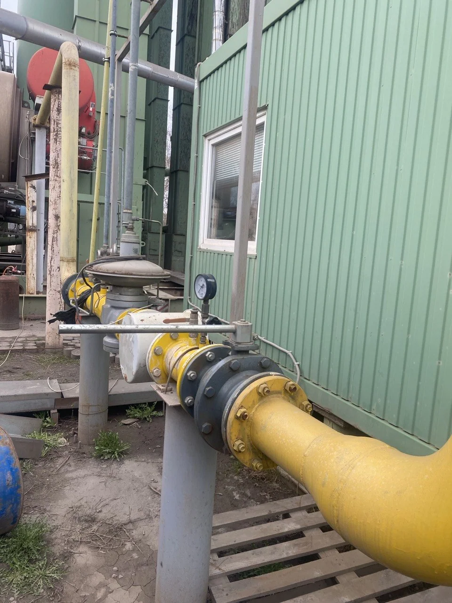
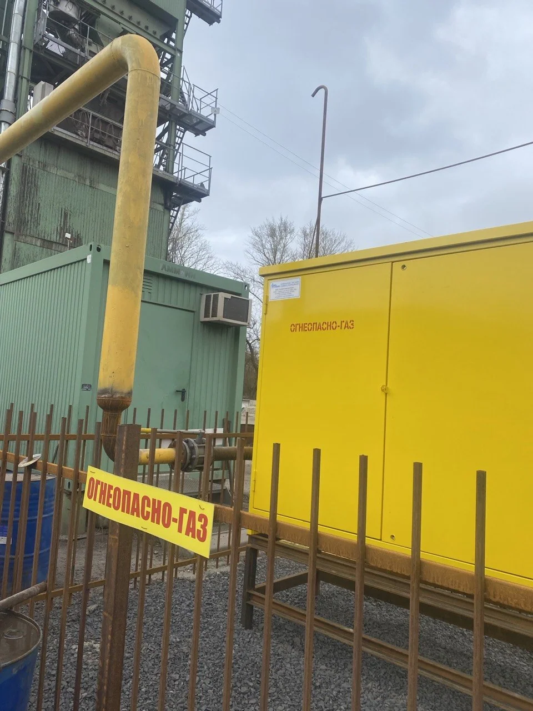

Газорегуляторное оборудование
Обвязка и измерительные приборы
Работаем в сфере газоснабжения с 2010 года. Проектирование, строительство газопроводов, монтаж и сопровождение газификации в Курске и Курской области.
Обсудить проект →ООО «КурскГазПром» работает в области газоснабжения с 2010 года. Компания ориентирована на частных заказчиков, застройщиков, коммерческие и производственные объекты в Курске и Курской области.
Мы рассматриваем газификацию как систему взаимосвязанных работ: выяснение технических условий, проектирование, наружные и внутренние сети, монтаж оборудования и оформление согласованной документации. Для каждого объекта маршрут индивидуален: имеет значение расположение участка, доступная сеть, требуемый расход газа, состав оборудования и готовность помещений.
Наша задача — помочь заказчику разобраться с исходными условиями, определить реальный объём необходимых работ и согласовать дальнейший порядок действий. Сроки, цена и состав услуг фиксируются после изучения конкретного объекта.

Обвязка и измерительные приборы

Фотография, предоставленная компанией

Фланцевое соединение и манометр

Общий вид инженерного узла
2010 год указан компанией как начало её опыта в сфере газоснабжения. Точную дату регистрации юридического лица подтвердим по реквизитам.
Газификация домов, наружные и внутренние сети, проектирование, документальное сопровождение, монтаж и техническое обслуживание.
Состав проекта обсуждается после проверки исходных документов, технических условий и параметров объекта.
Анализ исходных данных, технических условий, маршрута сети, оборудования и требований к проекту.
Согласование состава проектных и монтажных работ, договорных условий, документации и последовательности этапов.
Сведения об аттестациях специалистов, членстве в СРО и допусках будут опубликованы по подтверждённым документам. Неподтверждённых лицензий не заявляем.
Адрес, документы на дом и земельный участок, описание предполагаемого оборудования и места установки.
При наличии — технические условия, договор о подключении, ситуационный план, ранее выполненный проект и исходные расчёты.
Согласованный объём услуг, смета, договор, проектная и исполнительная документация — в зависимости от состава работ.
Перечень документов зависит от процедуры подключения и объекта. Основной ориентир: материалы «Моя ГРО» по первому этапу газификации. Памятка по документам ↗
Свидетельства об аттестации сварочного оборудования
Свидетельство о готовности применения технологии сварки
Регистрация ОПО и выписки о проверке знаний
Расскажите об объекте. Оставьте контактные данные, и мы свяжемся с вами для уточнения задачи.